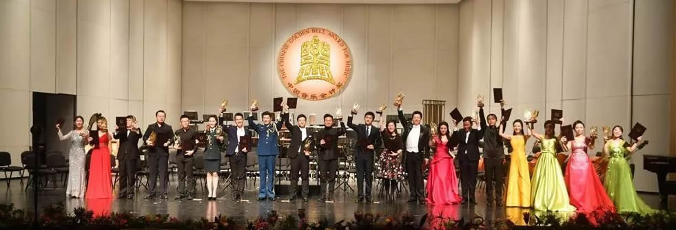
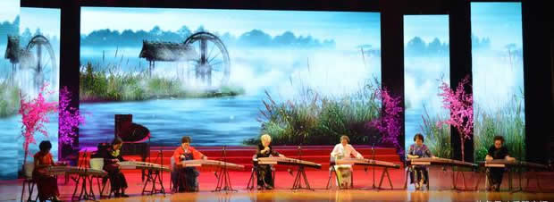
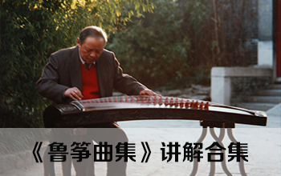

最新推荐
古筝音乐会
大型活动
名家讲堂
最新推荐

2017-10-30 “弹徵弦歌”秦筝陕西流派古筝专题讲座在烟台成功举办
2017-10-30 袁莎的古筝演奏打动了美国观众的心
2017-11-08 第十一届中国音乐金钟奖古筝比赛圆满结束
2017-12-05 一带一路传统音乐节·彩云之南古筝盛典2018年2月盛大开幕！
古筝音乐会

“筝韵流芳”——古筝名家专场音乐会圆满落幕
国乐长春艺术周今晚是王中山古筝交响音乐会，高山流水!
王温豪携潮汕稚禾筝团举办古筝新年音乐会
译韵悠扬-王译茁古筝专场音乐会在北京成功谢幕
刘诗纯古筝硕士独奏音乐会完美落幕引轰动
古筝名家上演闽南筝派“高山流水”,来感受一下“闽韵悠长”
大型活动
“筝赢天下”古筝经营大讲堂第七届全国筝会专场
“琼花杯”国际古筝邀请赛
“敦煌杯”古筝总决赛颁奖典礼暨宋心馨讲座在广州图书馆举行
金钟大讲堂
首届古筝传统流派及民间作品邀请赛
名家讲堂

韩庭贵《鲁筝曲集》讲解合集
林乔：林毛根与《寒鸦戏水》
黄冠英 黄楚英 蔡毅：《探索潮州筝发展新途径》
吴青讲座——《古筝艺术漫谈》
《弦索备考》中的古筝演奏艺术